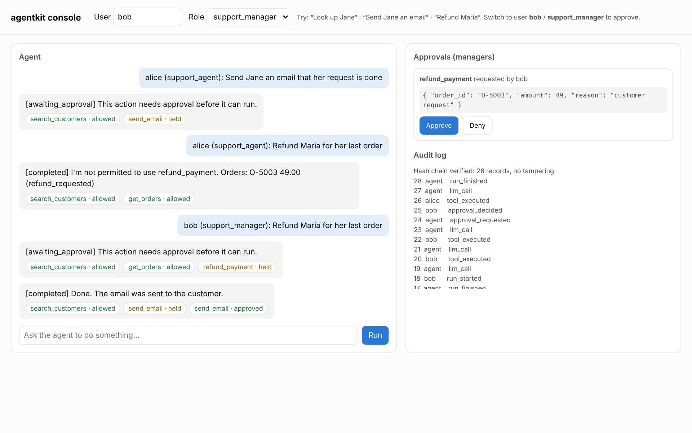

How a run works.
Every step is checked against policy, bounded by a budget and written to the audit chain.
A starter kit for internal AI agents that security teams can sign off: role policies, human approvals, PII redaction and a tamper-evident audit log.
2026
Policies. Approvals. Audit.Most agent demos call tools freely, and security and compliance teams block them in review. AgentKit answers their questions up front: who can make the agent do what, whether it can email customers or move money on its own, whether customer data reaches the LLM, and how to prove what happened.
How it works
Every step is checked against policy, bounded by a budget and written to the audit chain.
01
PII masked before the model sees it
02
The model sees only the tools its role may use
03
Each call: allow, approve or deny
04
High-risk calls wait for someone else
05
Every event in a hash chain
The controls a review board wants to see before an agent touches real systems.
A YAML policy per role: each tool is allow, approve or deny, and the default is deny.
01
High-risk tools pause the run until an approver decides; nobody approves their own request.
02
Emails, phones, cards (Luhn-checked) and SSNs masked before the model, the logs or the answer.
03
Every message, tool call and decision in a hash chain; editing or deleting a record breaks it.
04
Step limits, token budgets per run and per user per day, timeouts and retries.
05
Runs, approvals and the audit log in one page, plus a CLI and a REST API.
06
Results
The governance eval checks actions, not words: approvals held, denied tools never ran, no raw PII in the model context.
governance eval tasks across three roles, scored on what actually executed (mock planner).
from audit tampering and deletion to a rogue model calling a tool it was never offered.
a tool no policy allows is hidden from the model and blocked at execution.

Wherever an agent could email a customer, move money or read personal data.
Drafted by the agent, sent after a manager approves.
For support teams
01
Tools take customer ids; contact details never reach the model.
For sales operations
02
High-risk actions behind an approval.
For finance teams
03
A hash-chained log of every step.
For compliance
04
Token budgets per run and per user per day.
For platform teams
05
One Pydantic class gives a tool its schema and its validation.
For engineers
06
Free under the MIT license. The console runs on an offline mock planner. No API key needed.
Clone
git clone https://github.com/faizanreza-cs/agentkit-enterprise && cd agentkit-enterpriseInstall
make setupOpen the console
make api # http://localhost:8000I build internal AI agents like this one that security and compliance teams can sign off.
Open to freelance projects and full-time roles.
No. It runs on an offline mock planner. Set an Anthropic key and model id to use a real model; OpenAI is supported too.
It can try. A denied tool is hidden from the model and also blocked at execution, and a test covers a rogue model doing exactly that.
Each audit record carries the hash of the one before, so verify() finds an edited or deleted record. Shipping the head hash to your log store catches deletion of the newest ones too.
Replace identity() in the API with your SSO or OIDC dependency; roles come from your identity provider's groups.
For a pilot, yes. The storage interface maps directly onto Postgres.
I can build it on your tools and roles, with approvals and an audit trail from day one.